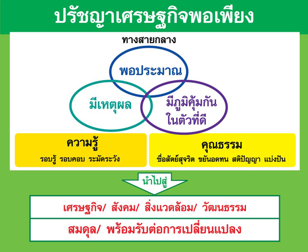

เมนูหลัก
หน้าหลัก
เศรษฐกิจพอเพียงคืออะไร
หลักปรัชญาของเศรษฐกิจพอเพียง
หลัก 3 ห่วง 2 เงื่อนไข
พระราชดำรัสเศรษฐกิจพอเพียง
ลิ้งที่เกี่ยวข้อง
โรงเรียนบ้านหนองคูโนนแก้วหนองอีย่า
สำนักงานคณะกรรมการการศึกษาขั้นพื้นฐาน
กระทรวงศึกษาธิการ
ผู้จัดทำ
|
หลัก 3 ห่วง 2 เงื่อนไข
เป็นบทสรุปของเศรษฐกิจพอเพียง นั่นเอง คือ สรุปให้เข้าใจได้ง่ายๆ ดังต่อไปนี้
3 ห่วง คือ ทางสายกลาง ประกอบไปด้วย ดังนี้
ห่วงที่ 1 คือ พอประมาณ หมายถึง พอประมาณในทุกอย่าง ความพอดีไม่มากหรือว่าน้อยจนเกินไปโดยต้องไม่เบียดเบียนตนเอง หรือผู้อื่นให้เดือดร้อน
ห่วงที่ 2 คือ มีเหตุผล หมายถึง การตัดสินใจเกี่ยวกับระดับของความพอเพียงนั้น จะต้องเป็นไปอย่างมีเหตุผลโดยพิจารณาจากเหตุปัจจัยที่เกี่ยวข้อง
ตลอดจนคำนึงถึงผลที่คาดว่าจะเกิดขึ้นจากการกระทำนั้นๆ อย่างรอบคอบ
ห่วงที่ 3 คือ มีภูมิคุ้มกันที่ดีในตัวเอง หมายถึง การเตรียมตัวให้พร้อมรับผลกระทบและการเปลี่ยนแปลงด้านการต่างๆ
ที่จะเกิดขึ้นโดยคำนึงถึงความเป็นไปได้ของสถานการณ์ต่างๆ ที่คาดว่าจะเกิดขึ้นในอนาคตทั้งใกล้และไกล
2 เงื่อนไข ตามแนวเศรษฐกิจพอเพียง ได้แก่
เงื่อนไขที่ 1 เงื่อนไขความรู้ คือ มีความรอบรู้เกี่ยวกับ วิชาการต่างๆที่เกี่ยวข้องอย่างรอบด้าน ความรอบคอบที่จะนำความรู้เหล่านั้นมาพิจารณาให้เชื่อมโยงกัน
เพื่อประกอบการ วางแผน และความระมัดระวังในขั้นตอนปฏิบัติ คุณธรรมประกอบด้วย มีความตระหนักในคุณธรรม มีความซื่อสัตย์สุจริต และมีความอดทน มีความเพียร
ใช้สติปัญญาในการดำเนินชีวิต
เงื่อนไขที่ 2 เงื่อนไขคุณธรรม คือ มีความตระหนักในคุณธรรม มีความซื่อสัตย์สุจริตและมีความอดทน มีความเพียร ใช้สติปัญญาในการดำเนินชีวิต
“เศรษฐกิจพอเพียงจริงๆ คือ หลักการดำเนินชีวิตที่จริงแท้ที่สุด กรอบแนวคิดของหลักปรัชญามุ่งเน้นความมั่นคงและความยั่งยืนของการพัฒนา อันมีคุณลักษณะที่สำคัญ คือ
สามารถประยุกต์ใช้ในทุกระดับ ตลอดจนให้ความสำคัญกับคำว่าความพอเพียง ที่ประกอบด้วย ความพอประมาณ ความมีเหตุมีผล มีภูมิคุ้มกันที่ดีในตัว
ภายใต้เงื่อนไขของการตัดสินใจและการดำเนินกิจกรรมที่ต้องอาศัยเงื่อนไขความรู้และเงื่อนไขคุณธรรม”
“หากทุกฝ่ายเข้าใจกรอบแนวคิด คุณลักษณะ คำนิยามของเศรษฐกิจพอเพียงอย่างแจ่มชัดแล้ว ก็จะง่ายขึ้นในการนำไปประยุกต์ใช้เป็นแนวทางปฏิบัติ และจะนำไปสู่ผลที่คาดว่าจะได้รับ
คือ การพัฒนาที่สมดุลและยั่งยืน พร้อมรับต่อการเปลี่ยนแปลงในทุกด้าน ทั้งด้านเศรษฐกิจ สังคม สิ่งแวดล้อม ความรู้และเทคโนโลยี”

|